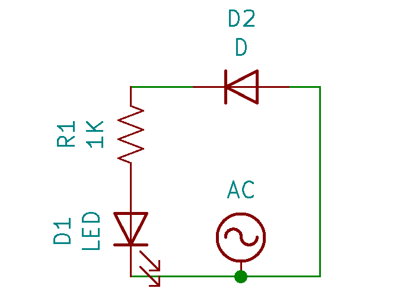
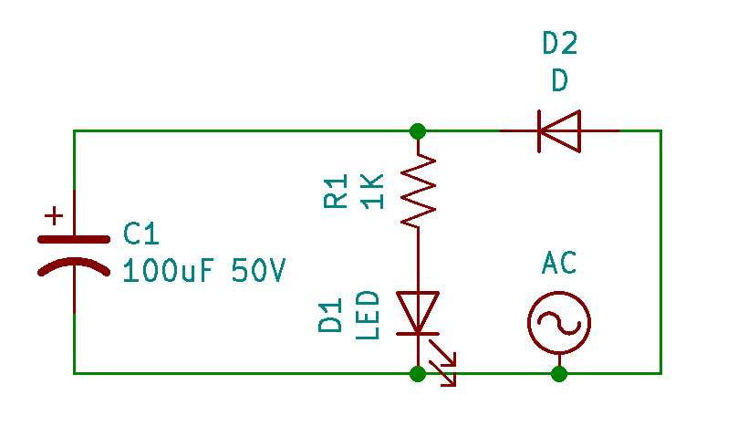
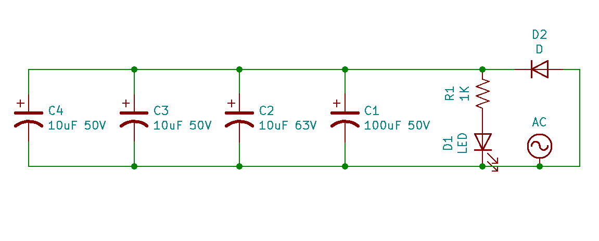

Introduction
What are AC and DC?
In electronics, rectifiers are used to convert alternating current (AC) to direct current (DC). DC is simpler and is how most of first learn about electricity. Electrons flow constantly from one terminal to the other, in the process powering whatever load the circuit may demand. Conventionally this flow of electrons is from the positive terminal to the negative terminal, but in actuality electrons are attracted to the positive terminal and repelled by the negative terminal. Typically, DC is visualized as a flat voltage line (usually positive). In reality, this is not always the case. Noise in the circuit can produce little oscillations about this flat voltage line generating ripple in the supply current. This is a common concern when using switching power supply circuits such as DC-DC voltage converters.
On the other hand, AC is not so intuitive. Instead of flowing in one direction, electrons are pulled back and forth through the circuit. This is accomplished by reversing the voltage—the difference in electric potential pushing or pulling the electrons—from positive to negative. Typically, AC is visualized as a sinusoidal wave centered about zero voltage. This a valid representation of the current flowing from the wall outlet, but it again may be suscepitble to noise. Current can alternate directions in waveforms other than sinusoids as well, such as triangles or squares.
Why use AC or DC?
Many electronic components including most integrated circuits (ICs) you would see on a printed circuit board (PCB) are only designed to handle current flow in one direction. In other words, they have an associated polarity. Forcing current flow in the opposite direction could damage the components. For this reason most small control electronics are powered via DC. Therefore, almost all devices plugging into wall outlets in the home include an internal rectifier circuit to transform AC from the wall outlet to DC for the device's control electronics. Additionally, wireless devices using batteries receive DC power from the battery and must use DC to recharge the battery.
AC is used in power distribution systems since it is much more efficient than using DC. This is due to a number of reasons including simpler power generation, simpler power transformation, and more efficient power transmission in AC systems. Power transformation is a key aspect of the efficiency of the power distribution system since higher voltage power with correspondingly lower current will have significantly smaller resistive losses during transmission. Transformers which rely on the properties of AC make the stepping up and stepping down of voltage fairly simple. On the note of transformers, AC also allows one to use current in one wire to induce current in another. This concept of mutual inductance associated with AC is used in many applications like transformers, paired inductors, AC motors, wireless chargers, and more.
AC in the Home
In the home, wall outlets are commonly understood to have a voltage of 120V and alternate at a frequency of 60 Hz. 120V is the root-mean-square (RMS) voltage of the AC source, while the voltage is actually oscillating back and forth between -170V and +170V. RMS voltage is basically a convenient metric for measuring the magnitude of alternating current in a way that is comparable with direct current. As the name would suggest, one could calculate the RMS voltage by recording at high resolution one period of oscillation of the AC signal, squaring each voltage value, averaging them, and taking the square root. DC voltage with the same magnitude as the RMS voltage level would effectively have the same impact on the circuit as the RMS voltage in terms of power dissipation.
Rectifiers
One of the simplest ways to rectify AC voltage is to simply place a diode in the circuit. Acting as a one-way channel, the diode only allows current to flow in one direction. The current that would otherwise flow in the opposite direction as the voltage switches directions is blocked. The current that is allowed to passed through is no longer alternating, but neither is it constant as DC should be. Instead, the current repeats itself rising from zero to a max value and then back to zero. To reduce this waveform to a constant voltage, capacitors can be added in to the circuit. As the voltage of the AC source rises, the voltage across the capacitor will also rise. When the voltage of the AC source begins to drop, the voltage stored across the capacitor allows current to discharge from the capacitor into the circuit fighting the lowering voltage. The larger the capacitance of the capacitor, the more charge it can store and the better it does at smoothing the output voltage.
Although simple, a single diode rectifier fails to convert the negative waveform of the AC resulting in no current flowing half of the time! To address this drawback, the more common method for rectifying AC to DC is to use what is called a full bridge rectifier. Behind an intimidatingly long name lies a relatively simple concept relying just on some more diodes to force all of the flow in one direction. Through a set of four diodes arranged in a bridge like formation, current will flow in one direction through the circuit regardless of which direction it flows through the full bridge rectifier. Again, capacitors are needed to smooth the repeating voltage on the output, but it's a little easier when the input voltage isn't zero half the time as was the case with the single diode rectifier. This smoothing process is never perfect and so the resulting DC voltage usually has some ripples in it.
The Project
In this project, I use both single diode rectifier and full bridge rectifier circuits with varying numbers of smoothing capacitors to rectify AC voltage coming from my wall outlet. Using the slow motion camera on my iPhone which records at 240 fps in conjunction with an LED load in the circuit, the different rectifier circuits can be analyzed and compared. I decided to analyze the rectifier circuit with an iPhone camera instead of a more powerful tool like an oscilloscope for two reasons. First, I don't have one. Second, other people aren't likely to have them either as they are expensive specialized tools. Any modern smart phone should be capable of recording at high enough frame rates to conduct the basic analysis of a rectifier that I will describe here.
I have an iPhone SE which can record at 30, 60, 120, and 240 fps with varying resolutions. To check which settings you're currently using on your iPhone simple navigate to Settings -> Camera as I've shown in the image below.

iPhone Camera Settings
For this project, you will need the following components:
- Step down Transformer
- Capacitors - for output voltage smoothing
- 4 Diodes - for rectifiers
- Breadboard - for circuit layout
- 1 LED
- 1 Resistor - current limiting for LED
- Assorted wires
The LED in this circuit serves as a visual representation of the instantaneous magnitude of current flowing through the circuit. When no current is flowing the LED will be off. As current starts to flow the LED turns on. If the current increases the LED will shine brighter. I connected by breadboard circuit to the AC supply from the wall outlet using a step down voltage transformer so as to avoid exceeding the voltage limitations of my circuit components. Any step down transformer that would bring the voltage below the max ratings of your components would be acceptable. In my case, I'm using an old step down transformer I took off of a junked speaker that outputs 9V when connected to the 120V wall outlet.
Required Supplies
The diodes, LED, and electrolytic capacitors all have polarities, so make sure to place them in the correct orientation as you build your circuit. When first trialing the rectifier circuit, I accidentally reversed the polarity of the rectifying diodes exposing my electrolytic capacitor to -9V and causing it to blow up.
Capacitor Explodes Under Reverse Voltage
Single Diode Rectifier
No Smoothing Capacitors
Circuit Schematic: Single Diode Rectifier
Breadboard Circuit: Single Diode Rectifier
According to this article on light flickering, humans are most sensitive to flickering between 10 to 25 Hz. The real time video with my iPhone at 30 fps is therefore representative of the upper end of what humans are likely to be capable of visualizing. With one diode in place, only the positive portion of the AC sine wave is permitted to pass resulting in a flicker at 60 Hz. This flicker is well beyond what most humans can perceive so I didn't observe it as I looked at the LED. The 30 fps video also did not pick up on the flicker as it is sampling a frequency smaller than the frequency of the flicker we are interested in perceving. Nonetheless, this flicker is still relatively low frequency and can be detected by other systems in the body. If this were the light source in my room, it's quite possible I would become aggravated over time and more prone to headaches. Since the flicker in this circuit was imperceptible to the naked eye, it follows that this will also be the case for all the coming circuits which improve upon the rectifier design.
Single Diode Rectifier - Real Time
Recording the same circuit setup at 240 fps and playing back at 1/8 speed, the flicker of the LED becomes quite apparent. To verify that the LED is indeed flashing at 60 Hz as one would expect from this circuit, we can slow the video down even further to count the flashes.
Single Diode Rectifier - Slow Motion (1/8 speed)
In the video below, I took one second of video from the slow motion clip (1/8 speed) and slowed it down 5 times further in iMovie. The blank periods where the negative half of the AC sine wave is blocked and no current flows through the LED are clearly observable. Looking at the clip, one can count 7 flashes of the LED. Since the slow motion video from the iPhone is played back at 1/8 speed, this means that the true duration of the clip below is only an eighth of a second. If the LED flashed 7 times in an eighth of a second, it would flash approximately 56 times in one second. This is not quite 60 Hz, but that's a result of the small sampling period. I repeated the same process for a 2 second clip from the slow motion video counting 15 flashes of the LED. 15 flashes over a quarter second would result in exactly 60 Hz.
Single Diode Rectifier - Super Slow Motion (1/40 speed)
One Smoothing Capacitor

Circuit Schematic: Single Diode Rectifier with One Capacitor

Breadboard Circuit: Single Diode Rectifier with One Capacitor
Single Diode Rectifier with One Smoothing Capacitor - Real Time
Observing in slow motion the single diode rectifer circuit with the capacitor added in parallel, the results are much improved. Instead of dropping to zero at a frequency of 60 Hz, the current through the LED drops only slightly at that same frequency of 60 Hz.
Single Diode Rectifier with One Smoothing Capacitor - Slow Motion (1/8 speed)
Single Diode Rectifier with One Smoothing Capacitor - Super Slow Motion (1/40 speed)
Many Smoothing Capacitors

Circuit Schematic: Single Diode Rectifier with Many Capacitors
Breadboard Circuit: Single Diode Rectifier with Many Capacitors
Single Diode Rectifier with Many Smoothing Capacitors - Real Time
Adding three more smoothing capacitors in parallel with the LED smooths the current through the LED even further, making the 60 Hz flicker nearly unnoticeable even at super slow motion. For all intensive purposes, rectification complete!
Single Diode Rectifier with Many Smoothing Capacitors - Slow Motion (1/8 speed)
Single Diode Rectifier with Many Smoothing Capacitors - Super Slow Motion (1/40 speed)
Environmental Light
It's worthwhile to note at this point that when trying to examine the slightest flickers in the LED to qualify the degree of smoothing, flickering in the environment should also be considered. Taking a slow motion video of just my hand on the desk at 240 fps and 1/8 speed it's clear that there is already some flickering in the environment. Although there are a number of light sources in my room, the two brightest ones were my computer monitor and the room light. Taking slow motion videos under those isolated lighting conditions, it's clear the source of the flicker is my room light.
All Environmental Light - Slow Motion (1/8 speed)
Computer Monitors Light - Slow Motion (1/8 speed)
Room Light - Slow Motion (1/8 speed)
Repeating the early process of taking 1 second of video from the slow motion video at 1/8 speed but this time slowing it down further by 10 times, 15 flashes can be counted. Over the eighth of a second this video represents, that results in a flicker frequency of 120Hz. The lightbulb in my room is also powered from the AC supplied to the house, but why then is its flicker frequency double that of the AC frequency? The lightbulb in my room is not unidirectional, it will produce light as the current moves back and forth through the filament. Therefore, for one cycle of AC, the lightbulb will flicker twice; once for the positive half wave and again for the negative half wave. Two times the AC frequency of 60 Hz results in the 120 Hz frequency lightbulb flicker observable in super slow motion.
Room Light - Super Slow Motion (1/80 speed)
Full Bridge Rectifier
No Smoothing Capacitors

Circuit Schematic: Full Bridge Rectifier

Breadboard Circuit: Full Bridge Rectifier
Full Bridge Rectifier - Real Time
Full Bridge Rectifier - Slow Motion (1/8 speed)
In the below video, I took one second of video from the slow motion clip and slowed it down 10 times further in iMovie. Looking at the clip, one can count 15 flashes of the LED. Since the slow motion video from the iPhone is played back at 1/4 speed, this means that the true duration of the clip below is only a quarter second. If the LED flashed 15 times in a quarter second, it would flash approximately 60 times in one second. This checks out as we expect the full-wave signal coming through the full bridge rectifier from the 60 Hz wall outlet AC source to also have a frequency of 60 Hz.
Full Bridge Rectifier - Super Slow Motion (1/80 speed)
One Smoothing Capacitor

Circuit Schematic: Full Bridge Rectifier with One Capacitor

Breadboard Circuit: Full Bridge Rectifier with One Capacitor
Full Bridge Rectifier with One Smoothing Capacitor - Real Time
Full Bridge Rectifier with One Smoothing Capacitor - Slow Motion (1/8 speed)
Full Bridge Rectifier with One Smoothing Capacitor - Super Slow Motion (1/80 speed)
Many Smoothing Capacitors
Circuit Schematic: Full Bridge Rectifier with Many Capacitors

Breadboard Circuit: Full Bridge Rectifier with Many Capacitors
Full Bridge Rectifier with Many Smoothing Capacitors - Real Time
Full Bridge Rectifier with Many Smoothing Capacitors - Slow Motion (1/8 speed)
Full Bridge Rectifier with Many Smoothing Capacitors - Super Slow Motion (1/80 speed)